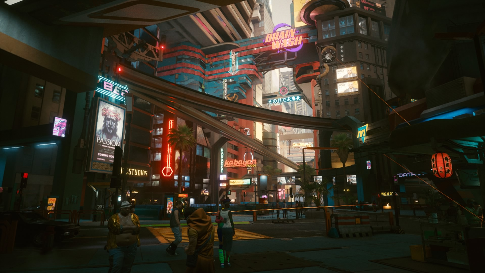

Cyberpunk 2077
Ditulis Oleh Farid Maulana Suherman pada 10 November 2022
saat ini sedang memuncak. Setelah sekian lama ditunggu-tunggu, akhirnya game garapan CD Projekt tersebut rilis juga. Sebagai salah satu game yang paling digembar-gemborkan tahun ini, pastinya banyak gamers yang penasaran dengan arti dari judul game tersebut, terutama kata “Cyberpunk”.
Banyak yang baru pertama kali mendengar kata Cyberpunk berkat game ini, namun kata ini sebenarnya sudah ada sebelum itu. Cyberpunk termasuk genre fiksi ilmiah di mana teknologi mengalami kemajuan, namun masyarakatnya malah mengalami kemunduran karena tidak mampu mengikuti perkembangannya.

Kalau dilihat-lihat, semua game dan film tersebut menunjukkan penampakan kota yang modern dengan banyaknya gedung pencakar langit. Sayangnya keserakahan manusia semakin terlihat ketika mereka memiliki teknologi yang terlampau canggih.
Tidak semua masyarakat bisa sejahtera karena teknologi, yang kaya akan menjadi semakin kaya sedangkan yang miskin akan semakin tertindas. Antagonisnya adalah perusahaan raksasa yang berkuasa dan ingin memanfaatkan teknologi untuk tujuan-tujuan tidak masuk akal seperti menguasai dunia, sedangkan tokoh protagonisnya adalah mereka yang ingin memberontak dari sistem dan mencari penghidupan yang lebih layak.
Bukan sekedar konspirasi, cerita pada game dan film ber-genre Cyberpunk merupakan kritik sosial yang mencerminkan situasi dunia saat ini. Setelah memahami makna “Cyberpunk”, maka kamu akan melihat Cyberpunk 2077 lebih dari sekedar game RPG biasa. Selain action dan grafis yang keren, mungkin kamu bisa memahami lebih dalam tentang apa yang ingin disampaikan oleh CD Projekt lewat jalan cerita Cyberpunk 2077.